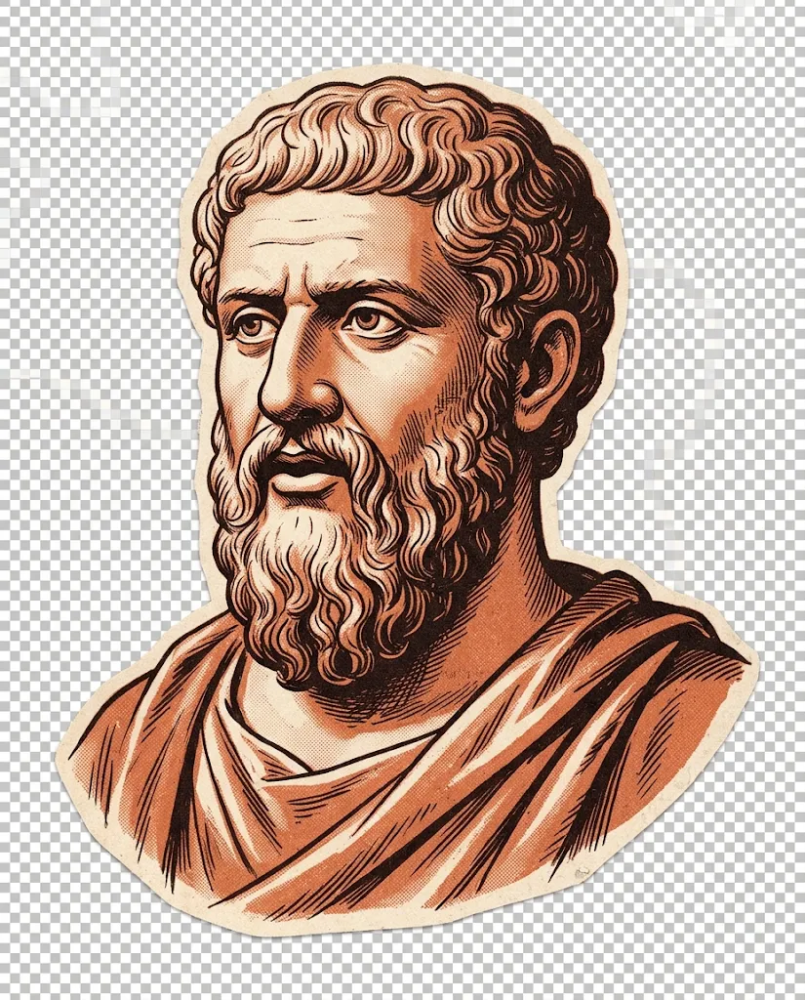
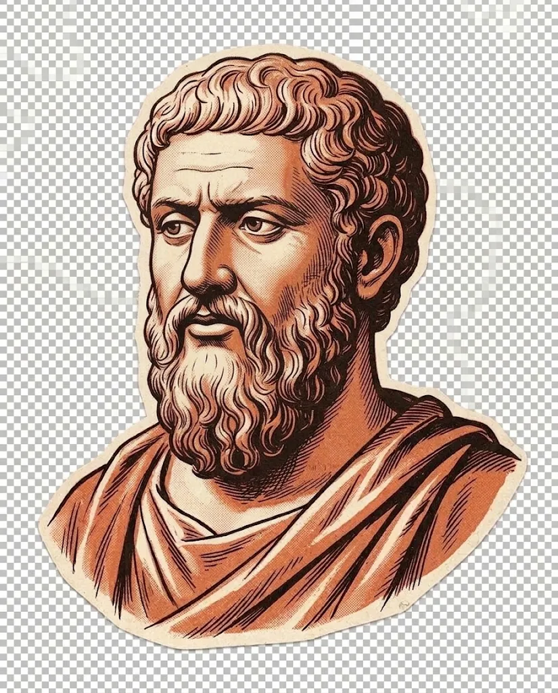
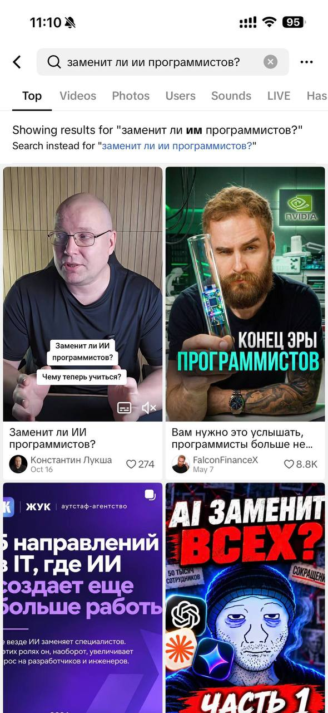
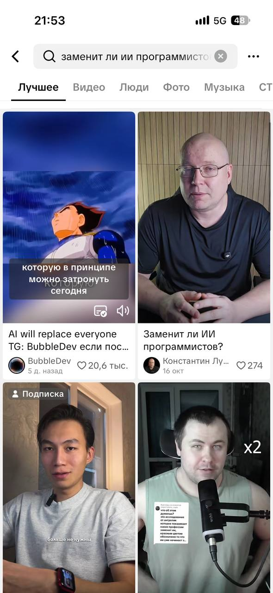
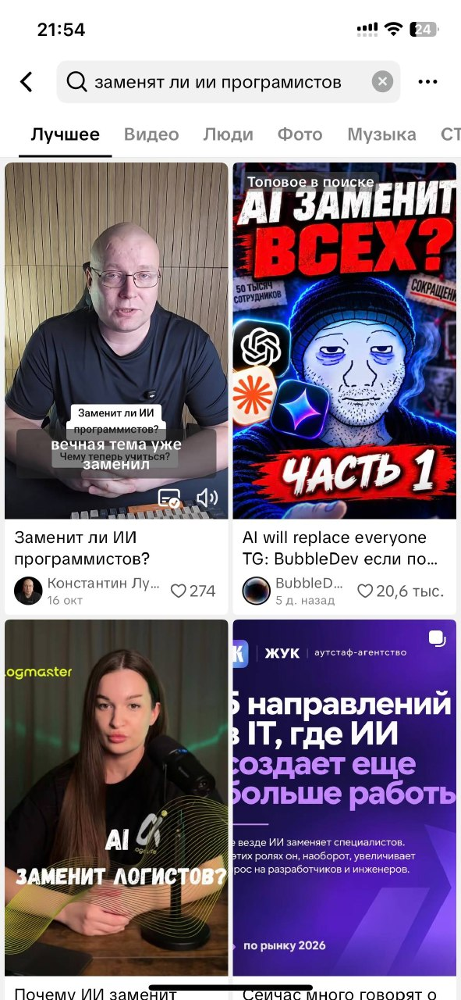
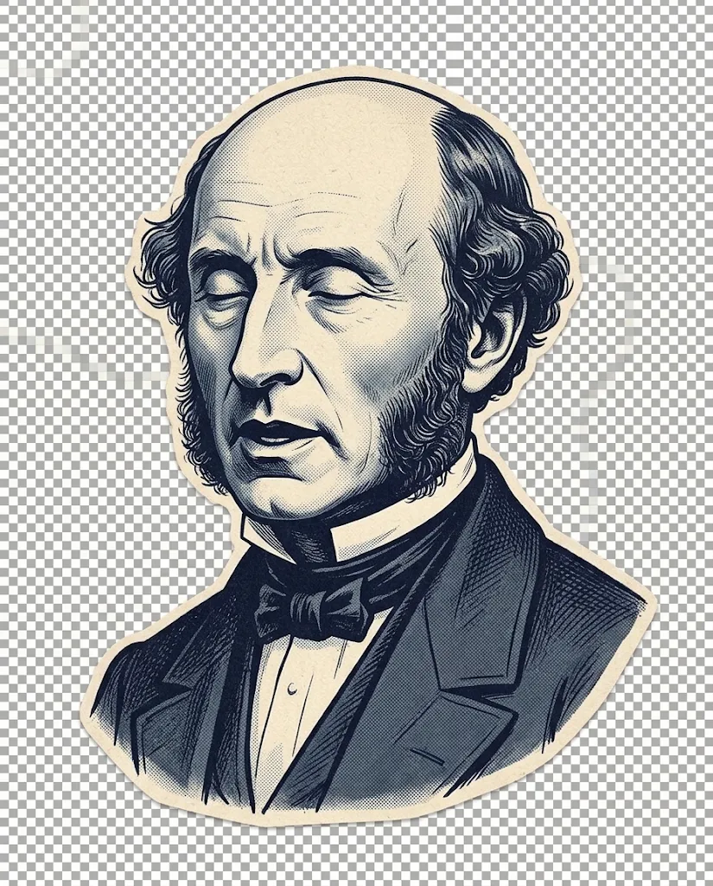
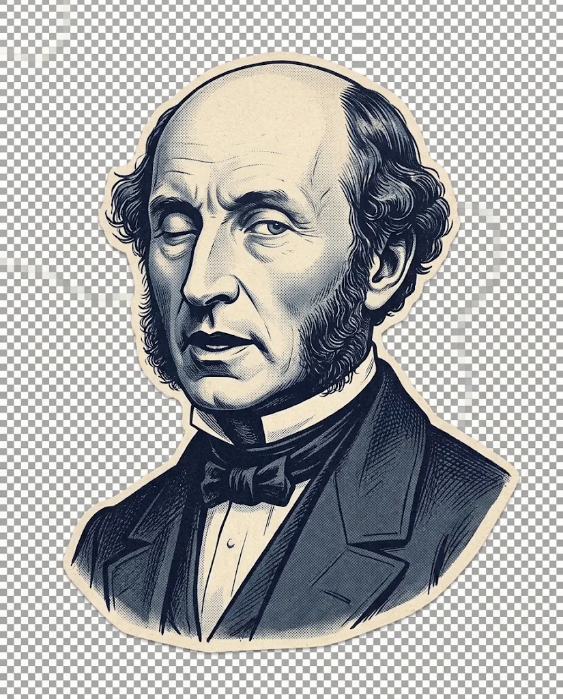

Платон
Если перед тобой только тени, легко принять их за весь мир.
«Государство», книга VII

Посмотрим, что выдаёт TikTok.
Прокрути, чтобы увидеть больше ↓


В присланных выдачах часть роликов повторяется, но порядок меняется. Рядом с прогнозами о сокращениях встречается ролик о направлениях IT, где ИИ создаёт работу.
Это примеры выдачи. Формулировки запроса различались, а в одном случае TikTok предложил автозамену. По этим снимкам нельзя установить причину различий.
Воображаемый диалог по мотивам их работ.
Если перед тобой только тени, легко принять их за весь мир.
«Государство», книга VII



А если хочешь проверить своё мнение, попробуй ответить на самое сильное возражение.
«О свободе», глава IIВыбери платформу. Сброс рекомендаций добровольный.
Сравни доводы и проверь, на каких данных они основаны.